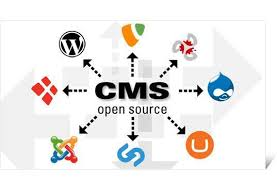
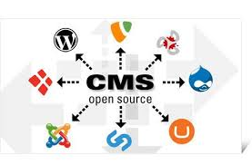

GAMALIEL DAZA ARREOLA
Gestores de Contenido Web
Presentación

-
Adobe Experience Manager: Utilizado por grandes empresas
para administrar contenido digital de manera avanzada. -
Sitecore: Conocido por su enfoque en la personalización de
experiencias digitales para usuarios. -
Kentico: Una solución integral que combina CMS con comercio
electrónico y automatización de marketing. -
WordPress: El CMS más utilizado en el mundo, con una gran
cantidad de plugins y temas personalizables. -
Joomla: Ofrece mayor flexibilidad que WordPress y es
adecuado para sitios más complejos. -
Drupal: Conocido por su alto nivel de seguridad y flexibilidad,
utilizado en sitios gubernamentales y corporativos. -
Facilidad de uso: Interfaces intuitivas para administradores y
editores. -
Gestor de contenido multimedia: Capacidad para subir y
organizar imágenes, videos y documentos. -
Escalabilidad: Posibilidad de adaptarse a proyectos pequeños o
grandes. - Seguridad: Protocolos para proteger la información y los usuarios.
-
Optimización SEO: Herramientas para mejorar el posicionamiento
en buscadores. -
Personalización: Temas y plugins que permiten adaptar el
diseño y funcionalidades a las necesidades del usuario. -
Gestión de usuarios: Permite asignar roles y permisos a
diferentes miembros del equipo para administrar el contenido. -
Integración con otras plataformas: Conectividad con redes
sociales, herramientas de marketing, CRM y sistemas de análisis
de datos. - Reducción de costos y tiempo en el desarrollo web.
-
Mayor accesibilidad para usuarios sin conocimientos en
programación. - Posibilidad de integración con plugins y extensiones.
- Facilitación del trabajo colaborativo en la gestión de contenido.
-
Posibilidad de integración con plugins y extensiones: Se
pueden añadir funcionalidades adicionales sin necesidad de
programar. -
Actualizaciones constantes y soporte: Los CMS de código
abierto tienen comunidades activas que lanzan mejoras y
parches de seguridad regularmente. -
Capacidad de adaptación a distintos tipos de proyectos:
Desde blogs personales hasta grandes portales de noticias o
tiendas en línea.
Los gestores de contenido web (CMS, por sus siglas en inglés) son
herramientas fundamentales para la creación, administración y publicación
de sitios web sin necesidad de conocimientos avanzados en programación.
Estos sistemas permiten a los usuarios manejar contenido digital de manera
eficiente, facilitando la gestión de textos, imágenes, vídeos y otros
elementos multimedia.
En la era digital, la creación y administración de sitios web se ha convertido
en una necesidad esencial para empresas, organizaciones y particulares.
Sin embargo, desarrollar un sitio web desde cero puede ser una tarea
compleja y costosa. Los gestores de contenido web (CMS, por sus siglas en
inglés) surgen como una solución eficiente para facilitar la creación, edición
y publicación de contenido en línea sin requerir conocimientos avanzados
en programación.
CMS
Los CMS permiten a los usuarios gestionar de manera intuitiva distintos
tipos de contenido digital, incluyendo textos, imágenes, videos y
documentos, a través de interfaces gráficas amigables. Además, ofrecen
funcionalidades adicionales como optimización SEO, integración con
plugins, gestión de usuarios y personalización de diseño. En este
documento, exploraremos en profundidad los tipos de gestores de contenido
web, sus características principales, ventajas y ejemplos populares, además
de un diseño de mapa de sitio web sobre el tema.
Este documento tiene como objetivo presentar una visión general sobre los
gestores de contenido web, su clasificación, características principales y
ventajas, así como proporcionar un diseño de un mapa de sitio web
relacionado con el tema. Finalmente, se incluirán referencias bibliográficas
en formato APA
CONTENIDO DEL TEMA
Introducción a los Gestores de Contenido Web
Un gestor de contenido web es una aplicación o conjunto de programas que
permiten la creación y administración de contenido digital en un sitio web.
Su función principal es simplificar la edición y organización de información
sin necesidad de conocimientos avanzados en código.
Los CMS están diseñados para facilitar la gestión del contenido sin que los
usuarios tengan que escribir código HTML, CSS o JavaScript directamente.
Utilizan bases de datos para almacenar la información y proporcionan una
interfaz gráfica de usuario (GUI) que permite realizar modificaciones sin
conocimientos técnicos
Tipos de Gestores de Contenido Web
2.1. CMS Propietarios
Son aquellos desarrollados y mantenidos por empresas privadas.
Generalmente requieren licencias para su uso, como Adobe Experience
Manager y Sitecore
Estos sistemas suelen ser más robustos y están diseñados para
empresas con grandes volúmenes de contenido y necesidades
específicas de personalización y seguridad.
2.2. CMS de Código Abierto
Son sistemas de gestión de contenido que permiten modificaciones y
distribución libre, como WordPress, Joomla y Drupal.
2.3. CMS en la Nube
Son plataformas basadas en la nube, donde el usuario no necesita instalar
software localmente. Ejemplos incluyen Wix y Squarespace.
Al ser de código abierto, estos CMS cuentan con comunidades activas
que contribuyen con mejoras constantes, extensiones y temas
gratuitos o de pago. Son ideales para proyectos de cualquier tamaño,
desde blogs personales hasta grandes portales de noticias.
Tipos de Gestores de Contenido Web
INTERESES
Tipos de Gestores de Contenido Web
Conclusión
En conclusión, los gestores de contenido web han revolucionado la forma
en que se crean y administran los sitios en internet. Gracias a su facilidad
de uso, flexibilidad y escalabilidad, son herramientas esenciales para
cualquier persona o empresa que desee establecer una presencia digital
efectiva.
Desing GamaArre
 
